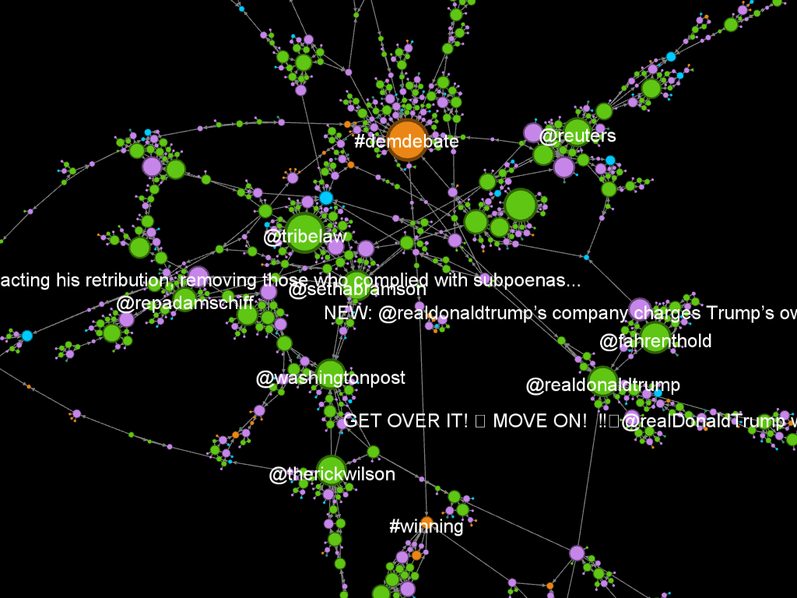

Twitter network graphing with Gephi
By Tom Renner
- 3 minutes read - 559 wordsGephi is a piece of software for visualising graph networks. It’s a powerful tool, and to use it fully requires significant domain knowledge that I don’t possess, but fortunately it’s still fascinating to play around with as an amateur!
As a techie, to me the obvious networks to graph are those created by the big Social Networks - YouTube, Facebook, etc. It’s not hugely surprising to find that mostly these graphs mostly aren’t available for querying, but excitingly there is a plugin that allows you to stream in live data from Twitter.
I’m very much a beginner, but I produced the network image below looking at Twitter activity around the word “Trump” (as an easy example of a query that produces a fair amount of activity at the moment), which I’m really pleased with.

In the above you can see different kinds of activity linked by their interactions, colour-coded by type (user, tweet, hashtag, etc.) and scaled by the number of interactions they had in the time period the data was collected over.
I think graphing in this way is super cool, but I couldn’t find a quick-start guide online for how get set up and producing graphs that are interesting to investigate, so I wrote myself a how-to as I went. It’s very basic, but got me to the point where the more detailed documentation online started to make sense.
So without further ado, here’s my beginners step-by-step guide for producing this kind of graph. I’ve added in bullet points of the settings I used to produce the image above, in case you want to follow along.
- Download Gephi
- Install TwitterStreamer
- Follow the tutorial on the TwitterStreamer installation page to set up a Twitter developer app and connect it to the plugin
- Stream in data from a Twitter search query, stopping streaming when you have a reasonable amount of data
- 5-10k nodes is about right
- I streamed a text search for the word “trump”, as an initial query that would produce data quickly
- Set a layout in the panel on the left so that your nodes don’t just appear randomly distributed across the canvas
- ForceAtlas 2: Prevent overlap, Scaling 1.5, Gravity 1.2
- Note: Changes to a layout take time to apply, and can be interrupted any time by selecting “Stop” in the layout panel.
- Resize nodes in the “Appearance” panel - scaling them by degree is a good starting point
- Note: If you stopped the layout (ForceAtlas 2, if you’re following along), you’ll want to restart it here so the newly resized nodes don’t overlap
- Select the labels you’d like to display
- Toggle label visibility, by selecting the “T” symbol at the bottom of the graph view
- On the “Data Laboratory” panel (in a tab at the top of the screen), select all nodes with Ctrl+A, and deselect “show label”
- Back on the “Overview” panel, select individual nodes of interest, right-click to “Select in data laboratory”. Switch tabs and select “show label” on that data point.
- Set some image settings for export along the bottom of the graph canvas
- Set black background, using the light bulb symbol
- Set the text colour to “unique”, using the “A” button
- Edge weight to full, using the slider
There are loads more options to play around with, layouts, filters, and on and on. I’m looking forward to getting thoroughly lost in menus.